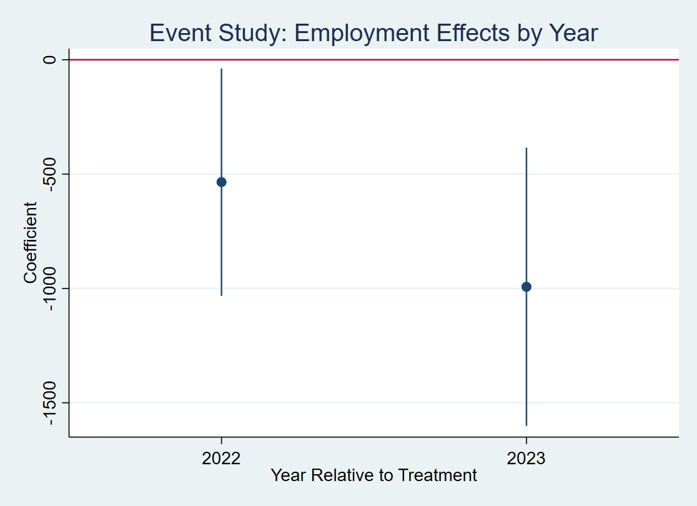
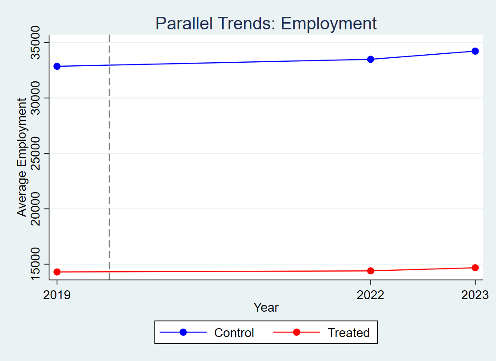
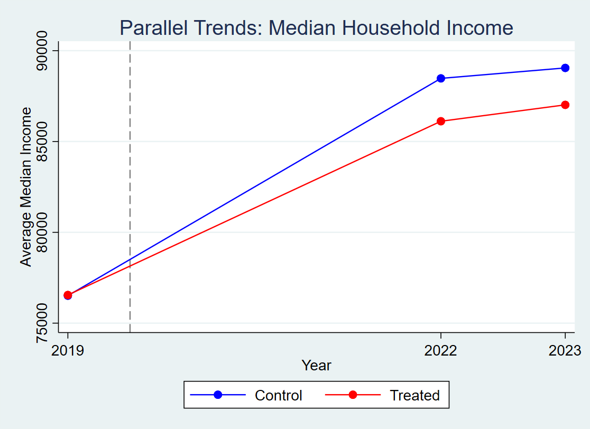

Graduate student in economics focused on applied econometrics, labor economics, and data-driven policy analysis using large public datasets.
Evaluates the impact of USDA ReConnect broadband investment on local labor markets using a difference-in-differences and event study framework across U.S. counties.
Methods: Difference-in-Differences, Event Study, Panel Data
Paper: View Paper
Presentation: View Slides
Data Pipeline (Python):
- Master Merge
- IPUMS Processing
- County Mapping
- FCC Filtering
Final Dataset: Cleaned Dataset
Figures
Event Study: Employment Effects

Parallel Trends: Employment

Parallel Trends: Income

Analyzes the impact of college closures on local labor markets using a difference-in-differences framework with exposure-based variation across counties.
Paper: View Paper
Presentation: View Slides
Replication Code: Stata Code
Data: Dataset
Examines the relationship between occupational licensing and wages using CPS ASEC data with weighted OLS and fixed effects models.
Key Findings:
- Licensing is associated with about 5% higher wages in baseline models
- Effect diminishes with controls, suggesting selection bias
- No strong differential effect across racial groups
Tables: Main Results
Additional Results: Heterogeneity
Replication Code: Stata Code
Data: Dataset
Presentation analyzing how the Earned Income Tax Credit affects labor force participation, based on an existing empirical study.
Focuses on understanding identification strategy, causal effects, and policy implications from a natural experiment framework.
Presentation: View Slides
Stata
Python
R
Excel
LaTeX
ACS / CPS Data
Difference-in-Differences
Event Study Design
Regression Analysis